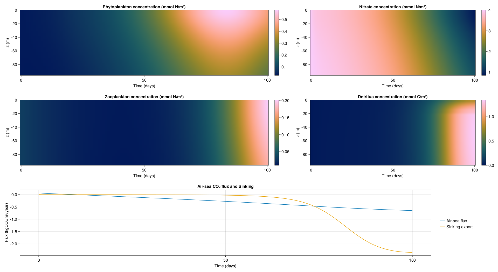

One dimensional column example
In this example we will setup a simple 1D column with the LOBSTER biogeochemical model and observe its evolution. This demonstrates:
- How to setup OceanBioME's biogeochemical models
- How to visualise results
This is forced by idealised mixing layer depth and surface photosynthetically available radiation (PAR) which are setup first
Install dependencies
First we will check we have the dependencies installed
using Pkg
pkg"add OceanBioME, Oceananigans, Printf, CairoMakie"Model setup
We load the packages and choose the default LOBSTER parameter set
using OceanBioME, Oceananigans, Printf
using OceanBioME.SLatissimaModel: SLatissima
using Oceananigans.UnitsSurface PAR and turbulent vertical diffusivity based on idealised mixed layer depth
Setting up idealised functions for PAR and diffusivity (details here can be ignored but these are typical of the North Atlantic)
@inline PAR⁰(x, y, t) = 60 * (1 - cos((t + 15days) * 2π / 365days))*(1 / (1 + 0.2 * exp(-((mod(t, 365days) - 200days) / 50days) ^ 2))) + 2
@inline H(t, t₀, t₁) = ifelse(t₀ < t < t₁, 1.0, 0.0)
@inline fmld1(t) = H(t, 50days, 365days) * (1 / (1 +exp(-(t - 100days) / (5days)))) * (1 / (1 + exp((t - 330days) / (25days))))
@inline MLD(t) = - (10 + 340 * (1 - fmld1(365days-eps(365days)) * exp(-mod(t, 365days) / 25days) - fmld1(mod(t, 365days))))
@inline κₜ(x, y, z, t) = 1e-2 * (1 + tanh((z - MLD(t))/10)) / 2 + 1e-4
@inline temp(x, y, z, t) = 2.4 * cos(t * 2π / year + 50day) + 10temp (generic function with 1 method)Grid and PAR field
Define the grid and an extra Oceananigans field for the PAR to be stored in
Lx, Ly = 20, 20
grid = RectilinearGrid(size=(1, 1, 50), extent=(Lx, Ly, 200))1×1×50 RectilinearGrid{Float64, Oceananigans.Grids.Periodic, Oceananigans.Grids.Periodic, Oceananigans.Grids.Bounded} on Oceananigans.Architectures.CPU with 3×3×3 halo
├── Periodic x ∈ [0.0, 20.0) regularly spaced with Δx=20.0
├── Periodic y ∈ [0.0, 20.0) regularly spaced with Δy=20.0
└── Bounded z ∈ [-200.0, 0.0] regularly spaced with Δz=4.0Specify the boundary conditions for DIC and O₂ based on the air-sea CO₂ and O₂ flux
CO₂_flux = GasExchange(; gas = :CO₂, temperature = temp, salinity = (args...) -> 35)
model = NonhydrostaticModel(; grid,
closure = ScalarDiffusivity(ν = κₜ, κ = κₜ),
biogeochemistry = LOBSTER(; grid,
surface_phytosynthetically_active_radiation = PAR⁰,
carbonates = true,
advection_schemes = (sPOM = WENO(grid), bPOM = WENO(grid))),
boundary_conditions = (DIC = FieldBoundaryConditions(top = CO₂_flux), ),
advection = nothing)
set!(model, P = 0.03, Z = 0.03, NO₃ = 4.0, NH₄ = 0.05, DIC = 2239.8, Alk = 2409.0)Simulation
Next we setup the simulation along with some callbacks that:
- Show the progress of the simulation
- Store the model and particles output
- Prevent the tracers from going negative from numerical error (see discussion of this in the positivity preservation implimentation page)
simulation = Simulation(model, Δt=3minutes, stop_time=100days)
progress_message(sim) = @printf("Iteration: %04d, time: %s, Δt: %s, wall time: %s\n",
iteration(sim),
prettytime(sim),
prettytime(sim.Δt),
prettytime(sim.run_wall_time))
simulation.callbacks[:progress] = Callback(progress_message, TimeInterval(10days))
filename = "column"
simulation.output_writers[:profiles] = JLD2OutputWriter(model, merge(model.tracers, model.auxiliary_fields), filename = "$filename.jld2", schedule = TimeInterval(1day), overwrite_existing=true)
#simulation.output_writers[:particles] = JLD2OutputWriter(model, (; particles), filename = "$(filename)_particles.jld2", schedule = TimeInterval(1day), overwrite_existing = true)
scale_negative_tracers = ScaleNegativeTracers(; model, tracers = (:NO₃, :NH₄, :P, :Z, :sPOM, :bPOM, :DOM))
simulation.callbacks[:neg] = Callback(scale_negative_tracers; callsite = UpdateStateCallsite())Callback of ScaleNegativeTracers{NTuple{7, Int64}, NTuple{7, Float64}, Bool} on IterationInterval(1)Run!
Finally we run the simulation
run!(simulation)[ Info: Initializing simulation...
Iteration: 0000, time: 0 seconds, Δt: 3 minutes, wall time: 0 seconds
[ Info: ... simulation initialization complete (6.831 seconds)
[ Info: Executing initial time step...
[ Info: ... initial time step complete (3.410 minutes).
Iteration: 4800, time: 10 days, Δt: 3 minutes, wall time: 3.870 minutes
Iteration: 9600, time: 20 days, Δt: 3 minutes, wall time: 4.214 minutes
Iteration: 14400, time: 30 days, Δt: 3 minutes, wall time: 4.557 minutes
Iteration: 19200, time: 40 days, Δt: 3 minutes, wall time: 4.898 minutes
Iteration: 24000, time: 50 days, Δt: 3 minutes, wall time: 5.241 minutes
Iteration: 28800, time: 60 days, Δt: 3 minutes, wall time: 5.578 minutes
Iteration: 33600, time: 70 days, Δt: 3 minutes, wall time: 5.913 minutes
Iteration: 38400, time: 80 days, Δt: 3 minutes, wall time: 6.252 minutes
Iteration: 43200, time: 90 days, Δt: 3 minutes, wall time: 6.589 minutes
[ Info: Simulation is stopping after running for 6.927 minutes.
[ Info: Simulation time 100 days equals or exceeds stop time 100 days.
Iteration: 48000, time: 100 days, Δt: 3 minutes, wall time: 6.927 minutes
Now we can visulise the results with some post processing to diagnose the air-sea CO₂ flux - hopefully this looks different to the example without kelp!
P = FieldTimeSeries("$filename.jld2", "P")
NO₃ = FieldTimeSeries("$filename.jld2", "NO₃")
Z = FieldTimeSeries("$filename.jld2", "Z")
sPOM = FieldTimeSeries("$filename.jld2", "sPOM")
bPOM = FieldTimeSeries("$filename.jld2", "bPOM")
DIC = FieldTimeSeries("$filename.jld2", "DIC")
Alk = FieldTimeSeries("$filename.jld2", "Alk")
x, y, z = nodes(P)
times = P.times
air_sea_CO₂_flux = zeros(size(P)[4])
carbon_export = zeros(size(P)[4])
for (i, t) in enumerate(times)
air_sea_CO₂_flux[i] = CO₂_flux.condition.parameters(0.0, 0.0, t, DIC[1, 1, 50, i], Alk[1, 1, 50, i], temp(1, 1, 0, t), 35)
carbon_export[i] = (sPOM[1, 1, end - 20, i] * model.biogeochemistry.sinking_velocities.sPOM.w[1, 1, end - 20] + bPOM[1, 1, end - 20, i] * model.biogeochemistry.sinking_velocities.bPOM.w[1, 1, end - 20]) * model.biogeochemistry.organic_redfield
end
using CairoMakie
f = Figure(resolution = (1920, 1050))
axP = Axis(f[1, 1:2], ylabel="z (m)", xlabel="Time (days)", title="Phytoplankton concentration (mmol N / m³)")
hmP = heatmap!(times./days, float.(z[end-23:end]), float.(P[1, 1, end-23:end, 1:end])', interpolate=true, colormap=:batlow)
cbP = Colorbar(f[1, 3], hmP)
axNO₃ = Axis(f[1, 4:5], ylabel="z (m)", xlabel="Time (days)", title="Nitrate concentration (mmol N / m³)")
hmNO₃ = heatmap!(times./days, float.(z[end-23:end]), float.(NO₃[1, 1, end-23:end, 1:end])', interpolate=true, colormap=:batlow)
cbNO₃ = Colorbar(f[1, 6], hmNO₃)
axZ = Axis(f[2, 1:2], ylabel="z (m)", xlabel="Time (days)", title="Zooplankton concentration (mmol N / m³)")
hmZ = heatmap!(times./days, float.(z[end-23:end]), float.(Z[1, 1, end-23:end, 1:end])', interpolate=true, colormap=:batlow)
cbZ = Colorbar(f[2, 3], hmZ)
axD = Axis(f[2, 4:5], ylabel="z (m)", xlabel="Time (days)", title="Detritus concentration (mmol N / m³)")
hmD = heatmap!(times./days, float.(z[end-23:end]), float.(sPOM[1, 1, end-23:end, 1:end])' .+ float.(bPOM[1, 1, end-23:end, 1:end])', interpolate=true, colormap=:batlow)
cbD = Colorbar(f[2, 6], hmD)
axfDIC = Axis(f[3, 1:4], xlabel="Time (days)", title="Air-sea CO₂ flux and Sinking", ylabel="Flux (kgCO₂ / m² / year)")
hmfDIC = lines!(times ./ days, air_sea_CO₂_flux .* (12 + 16 * 2) .* year /(1000 * 1000), label="Air-sea flux")
hmfExp = lines!(times ./ days, carbon_export .* (12 + 16 * 2) .* year / (1000 * 1000), label="Sinking export")
f[3, 5] = Legend(f, axfDIC, "", framevisible = false)
save("$(filename).png", f)CairoMakie.Screen{IMAGE}

This page was generated using Literate.jl.